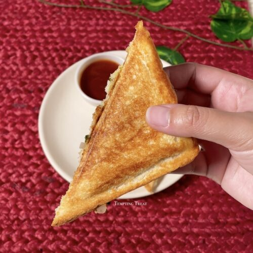

Aloo Sandwich

Yummy aloo sandwich
An easy to make aloo sandwich with fillings of potato and onion inside two
loaves of bread and cooked in a bread toaster.
Ingredients:
- Mashed potatoes.
- Chopped onions.
- Green chili pieces (optional).
- Ghee or butter.
- Salt and pepper.
- Bread.
Steps:
- Mix mashed potatoes and chopped onions.
- Add green chili pieces.
- Add salt and pepper to taste.
- Put an appropriate amount of stuff between two loaves of bread.
- Apply ghee or butter on the outside of both bread loaves.
- Put it inside the toaster and cook until golden brown.
- Serve with tomato sauce.